Frühe Tore: SCH feiert dritten Ligasieg in Folge
Zwei frühe Treffer ebneten den Weg zum Heimsieg: Unser SCH hat gegen den FSV Preußen Bad Langensalza mit 2:0 gewonnen. Robin Vogt und Ole Hoch erzielten die Tore für die Mannschaft von Alexander Ludwig, die bereits zur Pause mit zwei Toren führte. Ein schöner Samstagnachmittag für die Blau-Weißen, die ihren dritten Ligasieg hintereinander feiern konnten.
Ein Heimsieg mit Gewicht
Vor dem Anpfiff zeigte ein Blick auf die Tabelle, wie eng beide Mannschaften beieinanderlagen. Mit jeweils 13 Punkten gingen der SCH und die Gäste in den achten Spieltag. Vierter gegen Fünfter, dazu die Möglichkeit, sich mit einem Sieg vom direkten Konkurrenten abzusetzen. Bad Langensalza reiste mit vier Siegen aus sieben Ligaspielen an. Entsprechend wertvoll sind die drei Punkte gegen die Preußen. Für unsere Mannschaft stand nach dem Pokalspiel gegen Rot-Weiß Erfurt wieder die Verbandsliga auf dem Programm. Dort hatten die Blau-Weißen zuletzt zweimal gewonnen und dabei keinen Gegentreffer zugelassen. An diese Ergebnisse knüpfte die Ludwig-Elf nun auch vor eigenem Publikum an.
Vogt und Hoch treffen früh
Die entscheidenden Treffer fielen schon in der Anfangsphase. Robin Vogt und Ole Hoch brachten unseren SCH früh mit 2:0 nach vorn. Ein Auftakt, wie ihn sich unsere Mannschaft nur wünschen konnte. Während die Gäste bereits unter Zugzwang standen, hatte sich der SCH einen Vorsprung erarbeitet, der bis zur Halbzeit Bestand hatte. Wie viel diese beiden Tore wert waren, brachte Alexander Ludwig nach dem Spiel auf den Punkt: „Die zwei Tore in den ersten Minuten waren Gold wert. Ich bin froh über die drei Punkte.“
Auch nach der Pause bleibt die Null
Im zweiten Durchgang fielen keine weiteren Tore. Den Preußen gelang der Anschluss nicht. Die Blau-Weißen wiederum ließen gute Chancen ungenutzt und verpassten es, ihren Vorsprung auszubauen. So blieb es bis zum Abpfiff beim 2:0. Neben den frühen Treffern gab es damit einen weiteren Grund zur Freude: Erneut stand hinten die Null. Nach dem 4:0 gegen Suhl und dem 1:0 in Geratal folgte nun das 2:0 gegen Bad Langensalza. Drei Ligaspiele, neun Punkte, sieben eigene Tore und kein Gegentor.
Drei Punkte vor dem Derby
Mit dem fünften Saisonsieg erhöhte die Ludwig-Elf ihr Punktekonto auf 16. Die Freude unseres Trainers über diesen Erfolg ist gut nachvollziehbar. Gegen einen zuvor punktgleichen Gegner blieben alle drei Zähler im Gesundbrunnen.
Am kommenden Samstag, dem 17. Oktober, tritt der SCH beim 1. FC Eichsfeld an. Anstoß ist um 14 Uhr. Mit dem Heimsieg im Rücken geht unsere Mannschaft nun mit einem guten Gefühl in die Trainingswoche vor dem Derby.
Spieldaten
1. SC 1911 Heiligenstadt – FSV Preußen Bad Langensalza 2:0 (2:0)
SC Heiligenstadt
Fröhlich – Köhler – Abdoul Aziz – Aschoff (69. Jargees Ali) – Göbel (66. Grimm) – Lerch – Hoch – Schnellhardt – Vogt (81. Opfermann) – Voilenko – Fiedler
FSV Preußen Bad Langensalza
Patzer – Dolzer – Pawlak (75. Dietrich) – Zopf (66. Engel) – Fernschild – Schleip (78. Eichentopf) – Schack – Noah – Harbauer – Rösener – Pietsch (75. Aliyev)
Schiedsrichter
Götze
Zuschauer
267
Tore
1:0 Vogt (13.), 2:0 Hoch (10.)
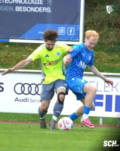
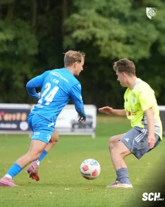
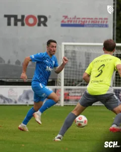
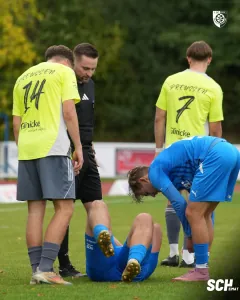
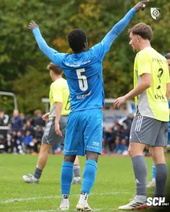
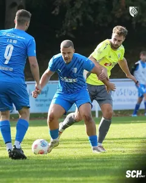
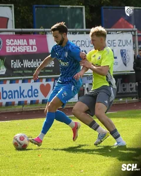
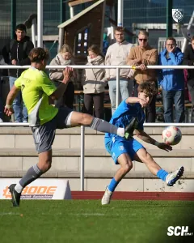
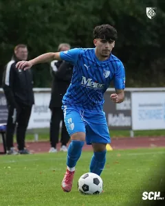
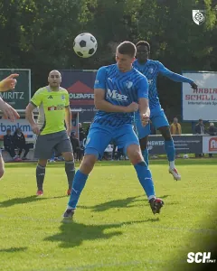
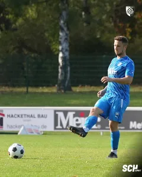
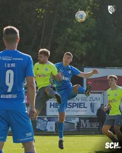
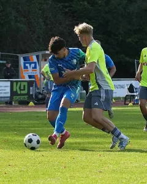
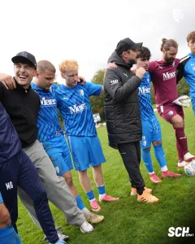
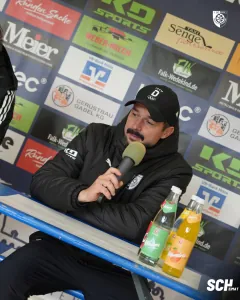
Quelle: www.sc1911-heiligenstadt.de · Stand 22.10.2026